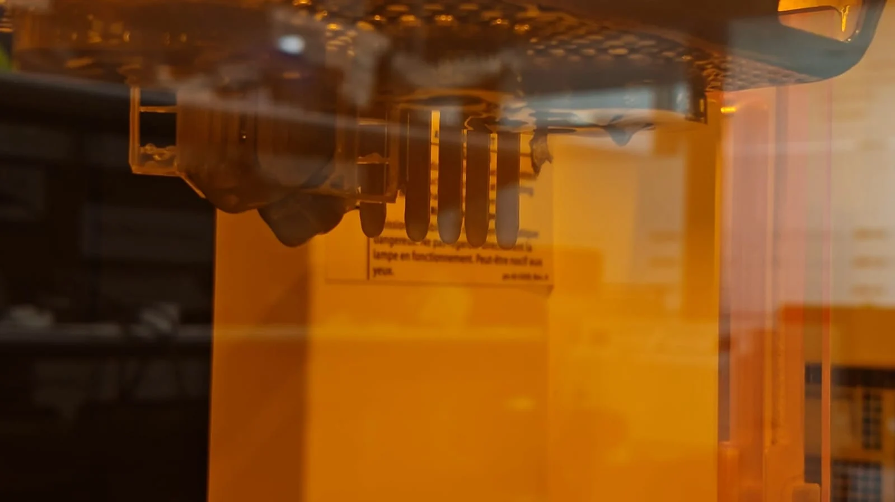
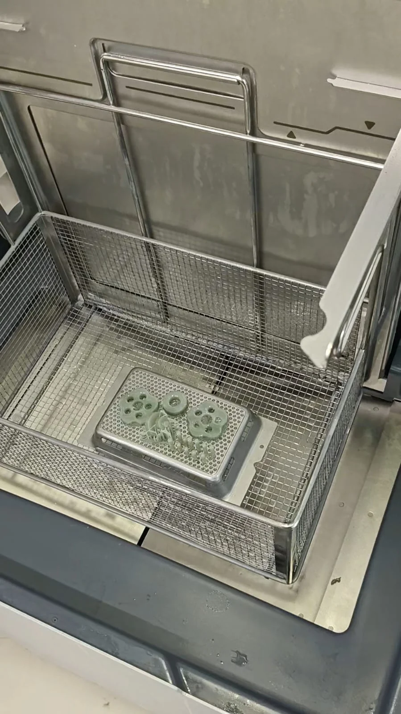
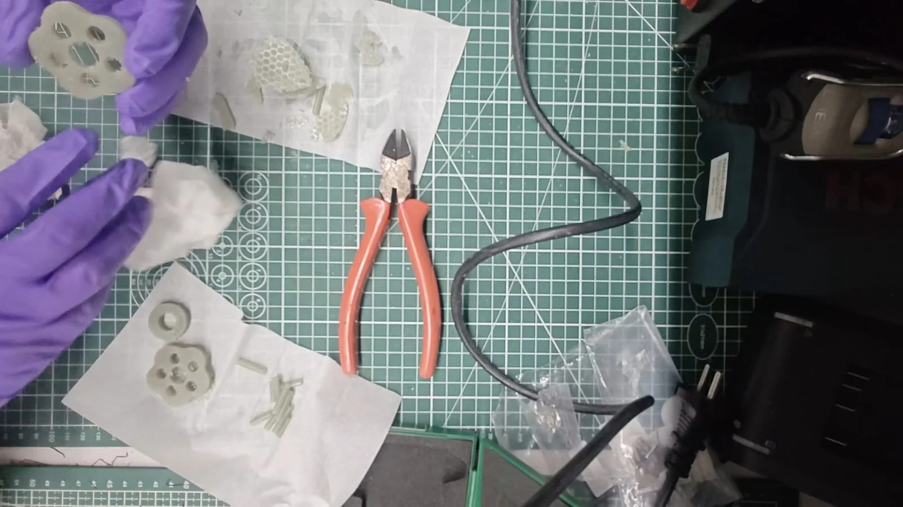
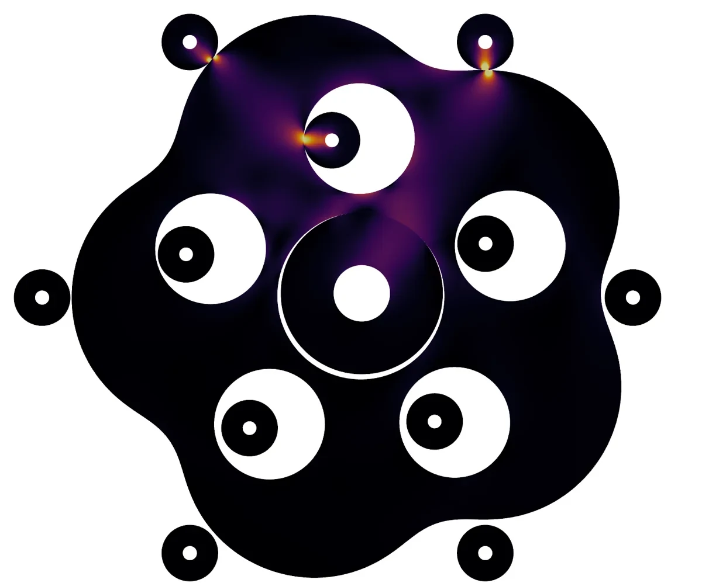
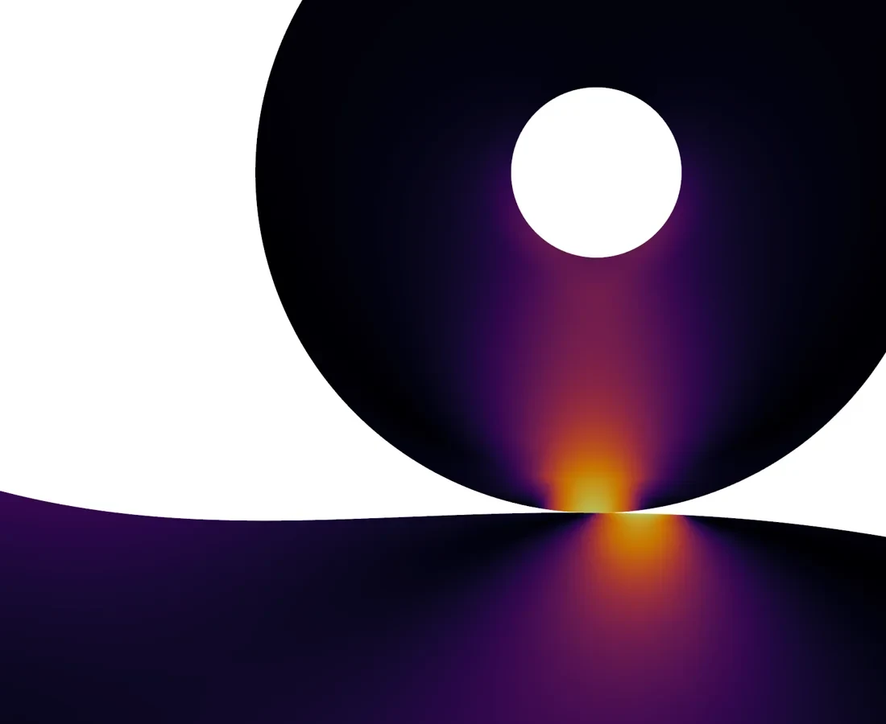
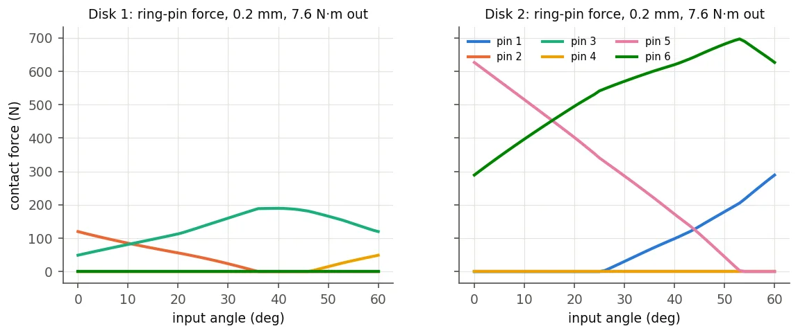
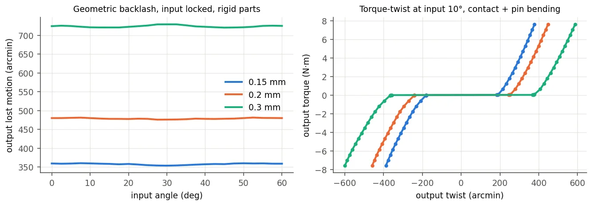
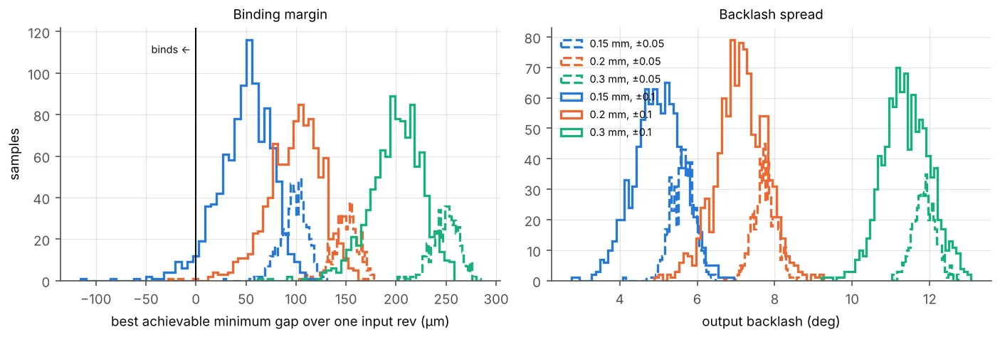
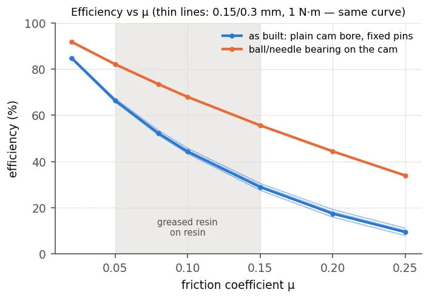

5:1 Cycloidal Gearbox
A reducer for the 6-DOF stage of the arm that mounts on a Power HD 1501MG metal-gear servo. I designed it in SolidWorks and analysed in simulation how a printed version behaves under load.
- My part
- CAD, contact modelling, simulation
- Tools
- SolidWorks, ANSYS Mechanical, Python
- Ratio
- 5:1, output reversed
- Status
- Printed in FDM, SLA and resin, and analysed in simulation. Measured results still to come.
This page is a piano roll. Its keys run down the left edge: click one, or click the paper to punch a note. Scrolling plays it.


The design
In a cycloidal drive, an eccentric input rolls a lobed disk around a ring of fixed pins, and output pins sitting in holes in the disk turn the output slowly the other way. Mine gives 5:1 and uses an epitrochoid profile that stays free of interference over a full input revolution.
I took it through several versions in SolidWorks, from steel pins and FDM printing to SLA and resin versions with every pin printed. Each process has its own running clearance, between 0.15 and 0.3 mm.



The analysis
CAD can show that a reducer moves. How much torque a printed one carries, how much play it has and how much of the servo’s power reaches the joint all depend on contact between the pins and the disks. So I built a contact model in Python and checked it against a separate contact analysis in ANSYS.
Together they cover load sharing, the strength of the printed features, backlash and print tolerance, efficiency, heat and wear. The practical conclusion for the arm is that a printed version can’t take the servo’s full torque, so the joint needs a torque limit in the controller.
The headline numbers, from simulation with generic SLA resin properties:
| Safe output torque in printed resin | about 0.6 N·m |
| Backlash at 0.2 mm clearance | 8° |
| Efficiency at a friction coefficient of 0.1 | 44% |
My Python model and ANSYS agreed on the output-pin force within 0.2%.


Some of the results
The two disks don’t share the load equally. The disk nearer the carrier takes about 83% of it at every load and clearance, because the printed output pins bend more where the far disk presses on them.

The clearances add up to a lot of play: 6.0° at 0.15 mm, 8.0° at 0.2 mm and 12.1° at 0.3 mm.

A printer doesn’t place pins exactly, so I ran a Monte Carlo study of random print errors. With a printer good to ±0.1 mm, 0.15 mm binds about one time in twenty and 0.2 mm almost never, which makes 0.2 mm the right clearance for the resin version.

Efficiency depends almost entirely on friction. More than half the loss is the cam sliding in its plain bore, and a rolling bearing there would lift efficiency at μ = 0.1 from 44% to 68%.

What’s next
The analysis so far is simulation. The next step is to measure how the printed gearbox performs.